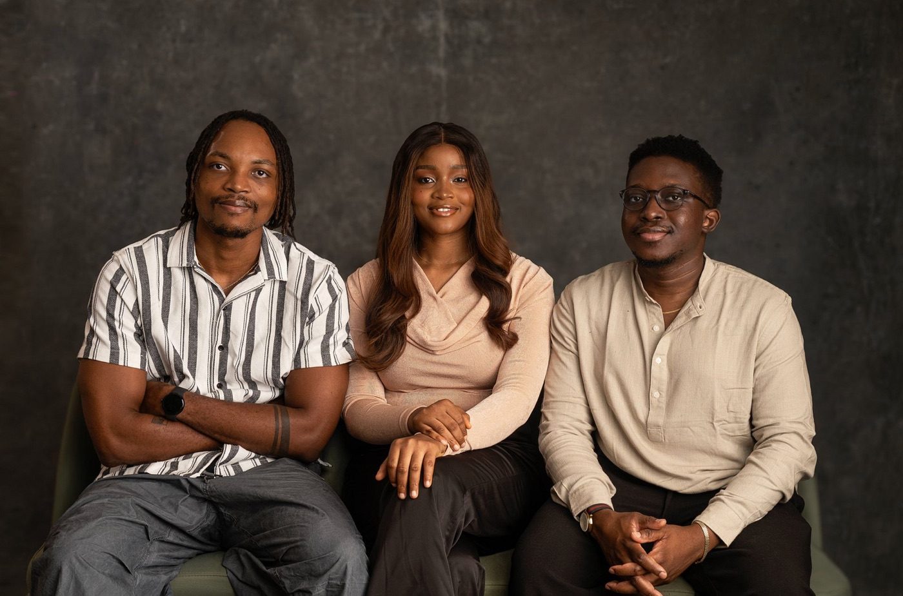

Notes from Raising Accrue’s $1.58m Seed Round

I love this picture I took with my co-founders recently, and I’ve been looking for an excuse to share itWhen we started fundraising at Accrue, I didn’t realize just how long it would take. People say fundraising is hard, but hearing it and living it are two different things. You quickly learn that it takes gallons of perseverance to stay sane through the process.
Here are some of the biggest lessons I learned leading up to our $1.58 million seed round.
1. You’ll need a copious amount of grit
When you’re building something you love, your product feels like your baby. You pour your time, emotions, and hope into it. So, when you start getting one rejection after another, it can be brutal. Hearing “no” from people who don’t see what you see does something to you. The rejection starts to feel personal, even if you tell yourself it shouldn’t.
You spend time crafting an application, telling your story, dreaming a little — only to get a short email that says no. It can really knock the wind out of you.
Having co-founders can make this process feel a bit lighter. It’s nice to have someone in the trenches with you who feels the full range of emotions just as deeply as you do. I remember finding it hard to accept a particular rejection we got once, and Clinton shared a perspective that really helped: getting rejected by investors is like pursuing someone you have a crush on. Sometimes they’re just not interested, and it has nothing to do with you. You dust it off, move on, and maybe the next person says yes. That analogy made the rejections feel a little less painful and a little more normal.
If you believe in what you’re building, go again and again. You never know when the timing will finally be right.
2. Manage your stress
Fundraising is stressful by design. You’re constantly switching between investor calls, pitch decks, follow-ups, and trying to actually run the company. For me, fundraising plays to strengths I don’t naturally have. I don’t enjoy talking endlessly or repeating the same answers to the same questions. It drains me.
After a while, I realized I needed intentional ways to manage my stress. For me, that looked like three things: prayer, ranting to friends, and (unfortunately) stress eating.
Prayer helps me center myself. It’s my way of offloading everything that feels heavy. I’d talk to God about the rejections, the exhaustion, the doubt — and always come out feeling lighter.
Then there’s my circle of friends. I can’t count how many times I’ve called them to rant about a bad day or dropped by someone’s house just to gist and forget my sorrows, lol. It might sound small, but it genuinely refuels me.
And then there’s stress eating — the one I’m still trying to fix. It’s comforting in the moment, but comes with its own regrets later when I step on the scale. The point is: find what helps you recharge. Fundraising will test your patience and your confidence. Make space to breathe.
3. Keep building while fundraising
Fundraising can easily take over your time completely. Some weeks, all you do is talk to investors, and after hours of calls, you don’t even have the strength to build anything. It’s understandable; those calls can be draining, especially when the answers aren’t what you hoped for.
But here’s the thing: you can’t control how long fundraising will take, but you can (try to) control your company’s progress in the meantime. If you stop building while you’re fundraising, you risk losing momentum.
At one point, we realized we were all getting sucked into fundraising, and the business itself was starting to slow down. So we decided to divide and conquer. Clinton focused more on fundraising, while the rest of us focused on growing our numbers and keeping the business moving.
That decision made a big difference. Fundraising takes time, but progress keeps you motivated. It reminds you that even if the money hasn’t landed yet, the mission is still alive.
4. Always ask for feedback
When someone says “no,” it’s easy to close the tab, feel bad, and move on. But asking why can change everything.
When Alliance DAO rejected us the second time, I remember sitting in silence for a few hours because I was so hopeful we’d get in, and all of that hope was dashed in one email. We told one of our investors that we got rejected, and he suggested we reach back out to ask why. So we did.
They explained their decision but asked us to keep them updated on our progress and apply with the next batch. We replied to their email with a link to our investor dashboard so they could track our progress in real time. They seemed impressed by our numbers at the time and came back to say they were rethinking their earlier decision. They eventually accepted us into that batch.
That experience taught me that asking for feedback can sometimes turn a “no” into a “yes.”
When we finally closed our $1.58 million seed round, it was a mix of emotions — excitement, relief, gratitude, disbelief. We had been trying to close a pre-seed/seed round since 2022, and it felt incredibly rewarding when we finally did in 2024. It took a couple of years and a lot of rejections.
The small wins along the way mattered just as much — every improved pitch deck, every user milestone, every investor who took a meeting, even if they didn’t invest. Those moments are what kept us going until the big yes came.
If you’re a founder raising money, brace yourself. You’ll need perseverance like mad. You’ll need to learn to manage stress, lean on your support system, keep building even when it’s hard, and always ask for feedback.
Rejections will sting, but try to keep going.